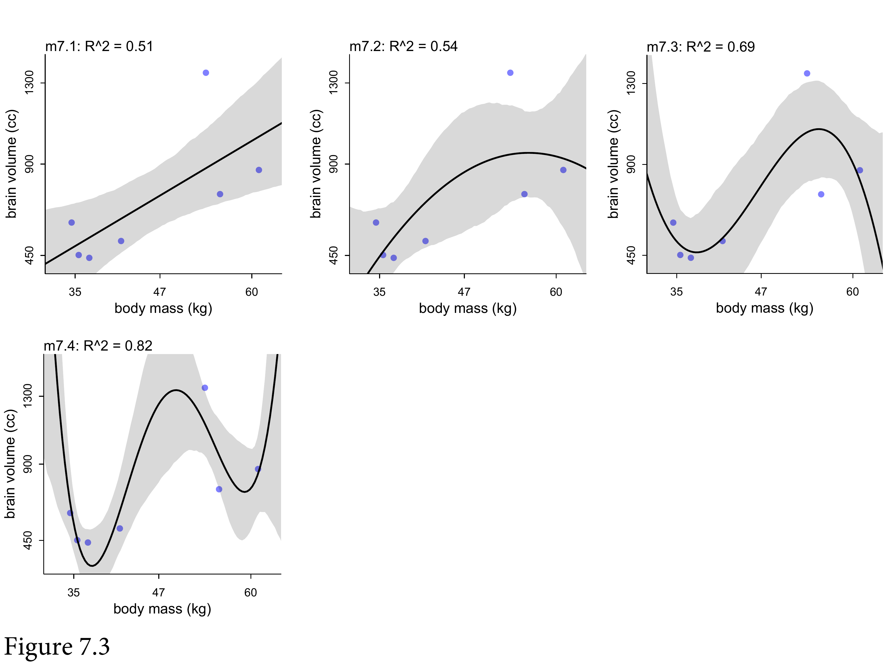

7.1 The problem with parameters

The basic problem is that models that are too simple don’t know enough; and models that are too complex learn too much. On the extrmee, you can encrypt every data point as a parameter, but it will make terrible predictions. Want to learn the “regular features” of the sample. Multilevel models don’t work like this because they’re less liekly to overfit. I have a model with 27K parameters, and it overfits very little because of this hierarchical structure.
7.1.1. More parameters (almost) always improve fit

Humans have big brains. If we look at body mass v brain volume, there is some association. What’s the statistical relationship?
(
d <-
tibble(species = c("afarensis", "africanus", "habilis", "boisei", "rudolfensis", "ergaster", "sapiens"),
brain = c(438, 452, 612, 521, 752, 871, 1350),
mass = c(37.0, 35.5, 34.5, 41.5, 55.5, 61.0, 53.5))
)## # A tibble: 7 × 3
## species brain mass
## <chr> <dbl> <dbl>
## 1 afarensis 438 37
## 2 africanus 452 35.5
## 3 habilis 612 34.5
## 4 boisei 521 41.5
## 5 rudolfensis 752 55.5
## 6 ergaster 871 61
## 7 sapiens 1350 53.5
\(R^2\) is one of the most over-used measures. If there’s no variance in the residuals, \(R^2\) = 1. It’s trivial to get there. A bit of a joke, but I’ve seen it in Nature.
library(rcartocolor)library(ggrepel)
theme_set(
theme_classic() +
theme(text = element_text(family = "Courier"),
panel.background = element_rect(fill = alpha(rcartocolor::carto_pal(7, "BurgYl")[3], 1/4)))
)
d %>%
ggplot(aes(x = mass, y = brain, label = species)) +
geom_point(color = carto_pal(7, "BurgYl")[5]) +
geom_text_repel(size = 3, color = rcartocolor::carto_pal(7, "BurgYl")[7], family = "Courier", seed = 438) +
labs(subtitle = "Average brain volume by body\nmass for six hominin species",
x = "body mass (kg)",
y = "brain volume (cc)") +
xlim(30, 65)we want to standardize body mass–give it mean zero and standard deviation one–and rescale the outcome, brain volume, so that the largest observed value is 1. Why not standardize brain volume as well? Because we want to preserve zero as a reference point: No brain at all. You can’t have negative brain. I don’t think. (p. 195)
d <-
d %>%
mutate(mass_std = (mass - mean(mass)) / sd(mass),
brain_std = brain / max(brain))This simply says that the average brain volume bi of species i is a linear function of its body mass mi. Now consider what the priors imply. The prior for α is just centered on the mean brain volume (rescaled) in the data. So it says that the average species with an average body mass has a brain volume with an 89% credible interval from about −1 to 2. That is ridiculously wide and includes impossible (negative) values. The prior for β is very flat and centered on zero. It allows for absurdly large positive and negative relationships. These priors allow for absurd inferences, especially as the model gets more complex. And that’s part of the lesson. (p. 196)
b7.1 <-
brm(data = d,
family = gaussian,
brain_std ~ 1 + mass_std,
prior = c(prior(normal(0.5, 1), class = Intercept),
prior(normal(0, 10), class = b),
prior(lognormal(0, 1), class = sigma)),
iter = 2000, warmup = 1000, chains = 4, cores = 4,
seed = 7,
file = "fits/b07.01")I’ve used exp(log_sigma) in the likelihood, so that the result is always greater than zero.
print(b7.1)## Family: gaussian
## Links: mu = identity; sigma = identity
## Formula: brain_std ~ 1 + mass_std
## Data: d (Number of observations: 7)
## Samples: 4 chains, each with iter = 2000; warmup = 1000; thin = 1;
## total post-warmup samples = 4000
##
## Population-Level Effects:
## Estimate Est.Error l-95% CI u-95% CI Rhat Bulk_ESS Tail_ESS
## Intercept 0.53 0.10 0.31 0.74 1.00 2487 1978
## mass_std 0.17 0.11 -0.06 0.41 1.00 2619 2123
##
## Family Specific Parameters:
## Estimate Est.Error l-95% CI u-95% CI Rhat Bulk_ESS Tail_ESS
## sigma 0.26 0.11 0.13 0.55 1.00 1543 2174
##
## Samples were drawn using sampling(NUTS). For each parameter, Bulk_ESS
## and Tail_ESS are effective sample size measures, and Rhat is the potential
## scale reduction factor on split chains (at convergence, Rhat = 1).Rethinking:
You could use OLS to get posteriors for these brain size model, e.g. by using lm. But you won’t get a posterior for sigma.
Bayesian inference means approximating the posterior distribution. It does not specify how that approximation is done.
We’ll compute \(R^2\) ourselves by computing the variance of the residuals, and the variance of the outcome variable. This means the actual empirical variance, not the variance that R returns with the var function, which is a frequentist estimator and therefore has the wrong denominator. So we’ll compute variance the old fashioned way: the average squared deviation from the mean. rethinking::var2 does this.
Let’s write a function to do this again:
R2_is_bad <- function(brm_fit, seed = 7, ...) {
set.seed(seed)
p <- predict(brm_fit, summary = F, ...)
r <- apply(p, 2, mean) - d$brain_std
1 - rethinking::var2(r) / rethinking::var2(d$brain_std)
}
R2_is_bad(b7.1)## [1] 0.4847697Now we’ll compare 5 models, each just a polynomial of higher degree.
b7.2 <-
brm(data = d,
family = gaussian,
brain_std ~ 1 + mass_std + I(mass_std^2),
prior = c(prior(normal(0.5, 1), class = Intercept),
prior(normal(0, 10), class = b),
prior(lognormal(0, 1), class = sigma)),
iter = 2000, warmup = 1000, chains = 4, cores = 4,
seed = 7,
file = "fits/b07.02")# cubic
b7.3 <-
brm(data = d,
family = gaussian,
brain_std ~ 1 + mass_std + I(mass_std^2) + I(mass_std^3),
prior = c(prior(normal(0.5, 1), class = Intercept),
prior(normal(0, 10), class = b),
prior(lognormal(0, 1), class = sigma)),
iter = 2000, warmup = 1000, chains = 4, cores = 4,
seed = 7,
file = "fits/b07.03")
# fourth-order
b7.4 <-
brm(data = d,
family = gaussian,
brain_std ~ 1 + mass_std + I(mass_std^2) + I(mass_std^3) + I(mass_std^4),
prior = c(prior(normal(0.5, 1), class = Intercept),
prior(normal(0, 10), class = b),
prior(lognormal(0, 1), class = sigma)),
iter = 2000, warmup = 1000, chains = 4, cores = 4,
seed = 7,
file = "fits/b07.04")
# fifth-order
b7.5 <-
brm(data = d,
family = gaussian,
brain_std ~ 1 + mass_std + I(mass_std^2) + I(mass_std^3) + I(mass_std^4) + I(mass_std^5),
prior = c(prior(normal(0.5, 1), class = Intercept),
prior(normal(0, 10), class = b),
prior(lognormal(0, 1), class = sigma)),
iter = 2000, warmup = 1000, chains = 4, cores = 4,
seed = 7,
file = "fits/b07.05")For the last one we replace the standard deviation with 0.001.
By “last model, m7.6,” McElreath was referring to the sixth-order polynomial, fit on page 199. McElreath’s rethinking package is set up so the syntax is simple to replacing σ with a constant value. We can do this with brms, too, but it’ll take more effort. If we want to fix σ to a constant, we’ll need to define a custom likelihood. Bürkner explained how to do so in his (2021a) vignette, Define custom response distributions with brms. I’m not going to explain this in great detail, here. In brief, first we use the custom_family() function to define the name and parameters of a custom_normal() likelihood that will set σ to a constant value, 0.001. Second, we’ll define some functions for Stan which are not defined in Stan itself and save them as stan_funs. Third, we make a stanvar() statement which will allow us to pass our stan_funs to brm().
custom_normal <- custom_family(
"custom_normal", dpars = "mu",
links = "identity",
type = "real"
)
stan_funs <- "real custom_normal_lpdf(real y, real mu) {
return normal_lpdf(y | mu, 0.001);
}
real custom_normal_rng(real mu) {
return normal_rng(mu, 0.001);
}
"
stanvars <- stanvar(scode = stan_funs, block = "functions")
b7.6 <-
brm(data = d,
family = custom_normal,
brain_std ~ 1 + mass_std + I(mass_std^2) + I(mass_std^3) + I(mass_std^4) + I(mass_std^5) + I(mass_std^6),
prior = c(prior(normal(0.5, 1), class = Intercept),
prior(normal(0, 10), class = b)),
iter = 2000, warmup = 1000, chains = 4, cores = 4,
seed = 7,
stanvars = stanvars,
file = "fits/b07.06")expose_functions(b7.6, vectorize = TRUE)
posterior_epred_custom_normal <- function(prep) {
mu <- prep$dpars$mu
mu
}
posterior_predict_custom_normal <- function(i, prep, ...) {
mu <- prep$dpars$mu
mu
custom_normal_rng(mu)
}
log_lik_custom_normal <- function(i, prep) {
mu <- prep$dpars$mu
y <- prep$data$Y[i]
custom_normal_lpdf(y, mu)
}nd <- tibble(mass_std = seq(from = -2, to = 2, length.out = 100))
fitted(b7.1,
newdata = nd,
probs = c(.055, .945)) %>%
data.frame() %>%
bind_cols(nd) %>%
ggplot(aes(x = mass_std, y = Estimate)) +
geom_lineribbon(aes(ymin = Q5.5, ymax = Q94.5),
color = carto_pal(7, "BurgYl")[7], size = 1/2,
fill = alpha(carto_pal(7, "BurgYl")[6], 1/3)) +
geom_point(data = d,
aes(y = brain_std),
color = carto_pal(7, "BurgYl")[7]) +
labs(subtitle = bquote(italic(R)^2==.(round(R2_is_bad(b7.1), digits = 2))),
x = "body mass (standardized)",
y = "brain volume (standardized)") +
coord_cartesian(xlim = range(d$mass_std))

This isn’t a bad model. \(R^2\) is 0.5 - that’s pretty good. But can you do better?
Sure, make it a parabola. Does a little better. Why stop there?

We can make it all the way to 6 parameters, then we run out of data points.


Maybe brain evolution is cubic.



Finally, we’ve reached nirvana - the singularity. If all you do basing your model on \(R^2\), this is the danger. In multiple regression, it’s less obvious that it’s happening.
make_figure7.3 <- function(brms_fit, ylim = range(d$brain_std)) {
# compute the R2
r2 <- R2_is_bad(brms_fit)
# define the new data
nd <- tibble(mass_std = seq(from = -2, to = 2, length.out = 200))
# simulate and wrangle
fitted(brms_fit, newdata = nd, probs = c(.055, .945)) %>%
data.frame() %>%
bind_cols(nd) %>%
# plot!
ggplot(aes(x = mass_std)) +
geom_lineribbon(aes(y = Estimate, ymin = Q5.5, ymax = Q94.5),
color = carto_pal(7, "BurgYl")[7], size = 1/2,
fill = alpha(carto_pal(7, "BurgYl")[6], 1/3)) +
geom_point(data = d,
aes(y = brain_std),
color = carto_pal(7, "BurgYl")[7]) +
labs(subtitle = bquote(italic(R)^2==.(round(r2, digits = 2))),
x = "body mass (std)",
y = "brain volume (std)") +
coord_cartesian(xlim = c(-1.2, 1.5),
ylim = ylim)
}
p1 <- make_figure7.3(b7.1)
p2 <- make_figure7.3(b7.2)
p3 <- make_figure7.3(b7.3)
p4 <- make_figure7.3(b7.4, ylim = c(.25, 1.1))
p5 <- make_figure7.3(b7.5, ylim = c(.1, 1.4))
p6 <- make_figure7.3(b7.6, ylim = c(-0.25, 1.5)) +
geom_hline(yintercept = 0, color = carto_pal(7, "BurgYl")[2], linetype = 2)
library(patchwork)
((p1 | p2) / (p3 | p4) / (p5 | p6)) +
patchwork::plot_annotation(title = "Figure7.3. Polynomial linear models of increasing\ndegree for the hominin data.")Figure 7.3
7.1.2. Too few parameters hurts, too

The model is overly sensitive. We can repeat the linear regression, removing one data point at a time. The lines don’t move very much. Drops a lot when we drop homo sapiens.

This fifth-order polynomial.
#d_minus_i <- d[ -i , ]b7.1.1 <-
brm(data = filter(d, row_number() != 1),
family = gaussian,
brain_std ~ 1 + mass_std,
prior = c(prior(normal(0.5, 1), class = Intercept),
prior(normal(0, 10), class = b),
prior(lognormal(0, 1), class = sigma)),
iter = 2000, warmup = 1000, chains = 4, cores = 4,
seed = 7,
file = "fits/b07.01.1")print(b7.1.1)## Family: gaussian
## Links: mu = identity; sigma = identity
## Formula: brain_std ~ 1 + mass_std
## Data: filter(d, row_number() != 1) (Number of observations: 6)
## Samples: 4 chains, each with iter = 2000; warmup = 1000; thin = 1;
## total post-warmup samples = 4000
##
## Population-Level Effects:
## Estimate Est.Error l-95% CI u-95% CI Rhat Bulk_ESS Tail_ESS
## Intercept 0.54 0.14 0.25 0.83 1.00 2007 1625
## mass_std 0.16 0.15 -0.15 0.49 1.00 2416 1595
##
## Family Specific Parameters:
## Estimate Est.Error l-95% CI u-95% CI Rhat Bulk_ESS Tail_ESS
## sigma 0.31 0.16 0.14 0.74 1.00 1169 1657
##
## Samples were drawn using sampling(NUTS). For each parameter, Bulk_ESS
## and Tail_ESS are effective sample size measures, and Rhat is the potential
## scale reduction factor on split chains (at convergence, Rhat = 1).fitted(b7.1.1,
newdata = nd) %>%
data.frame() %>%
bind_cols(nd) %>%
ggplot(aes(x = mass_std)) +
geom_line(aes(y = Estimate),
color = carto_pal(7, "BurgYl")[7], size = 1/2, alpha = 1/2) +
geom_point(data = d,
aes(y = brain_std),
color = carto_pal(7, "BurgYl")[7]) +
labs(subtitle = "b7.1.1",
x = "body mass (std)",
y = "brain volume (std)") +
coord_cartesian(xlim = range(d$mass_std),
ylim = range(d$brain_std))